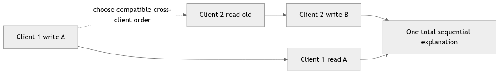
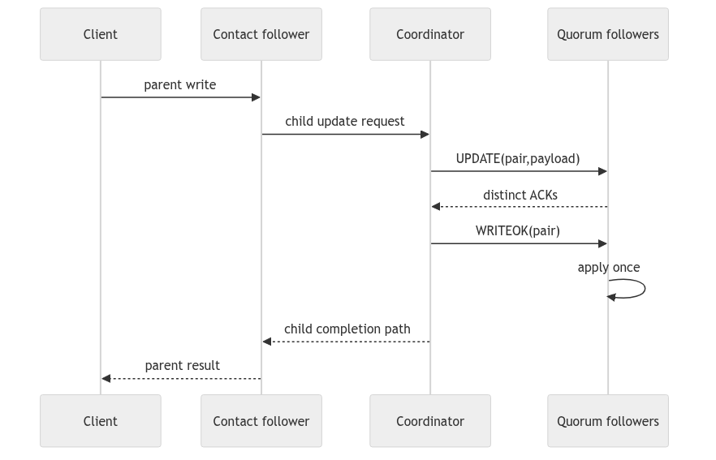
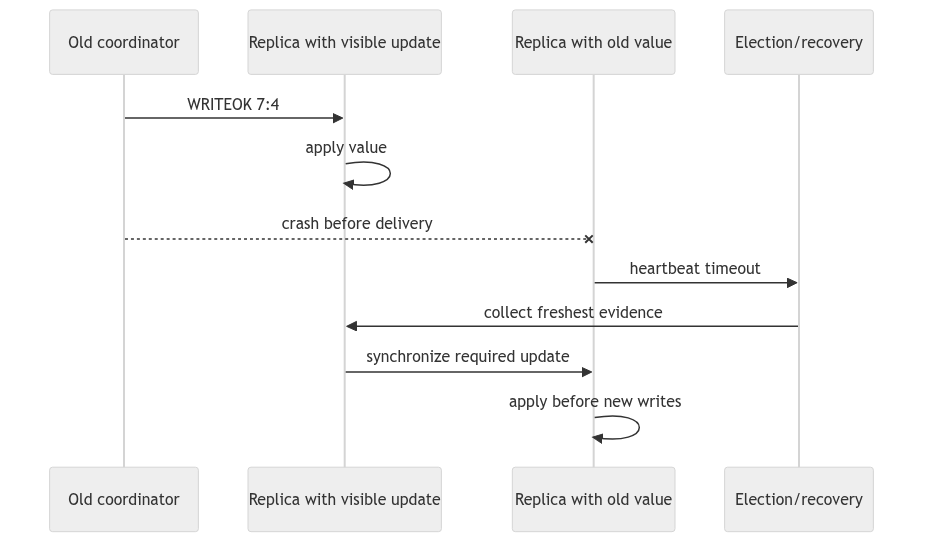
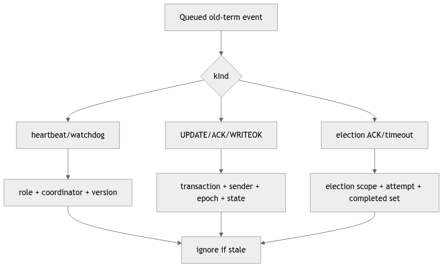
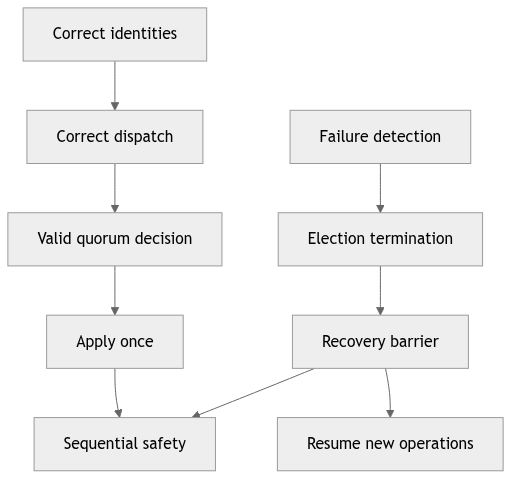
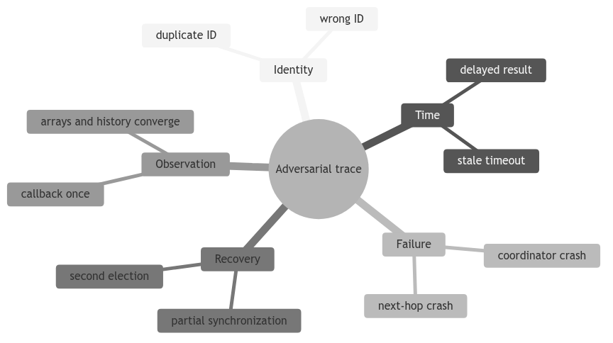

Purpose. This is a cross-subsystem study report showing how to reason about the complete intended system. It is not the final exam report and does not claim the split feature branches form a verified implementation.
Sources compared: specification, origin/main 84846dc, read 1ed58b6, write 8c42a18, update 59bbe80, and election d1222a2.
Reading classes one at a time is not enough. Correctness lives in connections:
For every scenario, trace actor state, transaction state, message queues, timers, and replicated history separately.
Each actor owns its mutable state. Messages crossing actors do not expose mutable arrays/lists.
Every simultaneously active local FSM has a unique TransactionId. A message is processed only by its intended transaction and only when valid for the current state/generation.
Every logical update has one stable, unique EpochPair carried consistently through proposal, acknowledgement, commit, history, and recovery.
A replica applies each ordered update no more than once and only after valid commit evidence.
All correct replicas apply committed updates in ascending epoch/sequence order.
If any replica applies an update, every correct replica eventually applies it, even if the first replica later crashes.
Old required work is recovered before new-coordinator updates begin.
After a replica becomes crashed, no queued or incoming event causes further protocol output or application progress.
To argue a healthy write:
The feature branches currently implement pieces of this trace but not all invariants: stable pre-broadcast epoch assignment, distinct ACK tracking, actual position mutation on the update branch, and integrated serialization require attention.
Client A and B each serialize their own operations, but their requests can reach different replicas concurrently. The contacted replicas can forward child updates concurrently.
The coordinator must decide one order:
UA gets <e,7>, UB gets <e,8>
FIFO coordinator-to-follower channels then preserve that send order. If the coordinator runs both update FSMs without an ordering queue or stable assignment discipline, ACK timing can cause inconsistent commit order.
Therefore “actors process one message at a time” is helpful but insufficient: the coordinator may interleave messages for multiple active FSMs across mailbox turns.
With five replicas and quorum three, one follower can crash without blocking progress.
Safety reasoning:
Liveness reasoning:
The inspected partial update branch counts ACK messages rather than distinct sender IDs, so the intended argument needs a stronger concrete implementation.
State:
Responsibility transfers through the trigger’s missing-UPDATE timeout. It starts/join election, waits for synchronization, then resubmits or reconstructs the request under the new coordinator.
Heartbeat may also detect failure, but the update-stage timeout gives a request-specific signal. The update branch’s timeout-to-election/retry behavior is still commented out.
Some replicas have observed the update; none should apply without WRITEOK. Election candidates advertise freshness, enabling a replica with the newest observation to win.
Recovery must decide how to handle the partial proposal. The specification favors completing interrupted work to prevent losing a value that might have been delivered. An immutable history record is necessary to know (index,value,epochPair).
A positions-only snapshot may not include an observed-but-unapplied update, so it cannot fully implement this reasoning.
This is the critical uniform-agreement case. Some replicas may apply; others may only have observed.
The new coordinator must:
Client timeout or coordinator death does not authorize rollback of an update already applied anywhere.
With no active updates, followers rely on heartbeat watchdogs.
False-election prevention requires:
Current heartbeat and election branches implement much of this handoff, though test coverage remains focused rather than exhaustive.
Election sender forwards token and schedules ACK timeout tied to target and attempt version. On current timeout it marks target unavailable and chooses the next ring ID.
Progress measure: each failed attempt permanently adds one unavailable ID for that local election. Static finite membership and surviving majority prevent endless retry of the same neighbor.
Late ACK/timeout from a previous attempt must not clear or redirect current pending state.
After token collection, the best candidate may fail before accepting leadership. The election FSM tries to send the final list to the winner. If forwarding fails, it removes that candidate and recomputes from the remaining set.
The safety question is whether the removed candidate held unique required history. The majority assumption says at least one correct member should know the most recent update, but the concrete history/evidence representation must make that claim true.
Staggered starts reduce collisions. If two still exist, replicas choose one preferred initiator deterministically and reject the loser.
For convergence, every replica must apply the same preference rule and scope the comparison to the same failed coordinator. Completed-term sets reject later stale tokens.
Election transaction preference does not choose the final coordinator; it chooses which token performs candidate collection. Final candidate freshness still determines the winner.
After synchronization, old heartbeat ticks, watchdog expiries, UPDATEs, ACKs, WRITEOKs, election timeouts, and tokens may remain queued.
Defenses include:
Every message type needs an explicit stale policy. FIFO cannot solve cross-sender or local-timer interleavings.
Reads are local and can occur while an update is in transit. Before WRITEOK, a replica returns its old value. After applying WRITEOK, it returns the new value.
During recovery, a design choice is required:
The specification emphasizes pausing new writes; it does not clearly demand global read blocking. The implementation/report must state the chosen behavior and its consistency consequence.
A client may time out even when its update eventually commits. The provided API reports success or timeout but has no operation-status query.
This means the system is not providing exactly-once client command semantics across retries. If an application retries after timeout, duplicate suppression needs a stable client request identity. TransactionId could contribute, but only if retry rules preserve it and histories recognize it.
Do not confuse replica at-most-once application of one update ID with application-level exactly-once requests.
Implemented as separate components:
Not established as one final verified system:
For each demonstration, draw five columns:
time | actor mailbox event | local FSM state | replicated state/history | outgoing messages
Mark the crash point exactly. Then explain:
This method is more reliable than memorizing method names.
Take this scenario: coordinator sent UPDATE to a quorum, sent WRITEOK to one follower, then crashed. Explain why electing any surviving replica by ID alone is insufficient. Your answer should mention observed history, uniform agreement, candidate freshness, idempotent completion, epoch transition, and delaying new writes until recovery.
The system-wide invariant to remember is: one ordered update that becomes visible anywhere must remain recoverable and eventually become visible once, in the same order, at every correct replica.
Safety proof obligations 1. one client request -> one parent transaction 2. one update -> one ordered EpochPair 3. ACK quorum -> one commit decision 4. WRITEOK validation -> apply at most once 5. recovery -> preserve committed/required history 6. client queue -> later read cannot overtake earlier write
To argue sequential consistency, pick a sequential order for completed
operations. Per-client order comes from the request queue. A write’s position
in the global order comes from its committed EpochPair. A read is placed
after the writes visible at its target replica. The difficult step is proving
that recovery never invents a second order for an update that was already
visible. That proof needs the quorum, history, election, and synchronization
reports together.
| Scenario | Safety question | Liveness question |
|---|---|---|
| duplicate ACK | can one sender count twice? | can a valid quorum still be reached? |
| coordinator crash after quorum | can a partial commit be lost/reordered? | do survivors elect and synchronize? |
| follower crash during WRITEOK | can it apply twice after restart? | can the system progress with a majority? |
| stale watchdog | can an old timer start a second election? | does a genuine silence still trigger one? |
| read during recovery | can it observe an unsafe snapshot? | when is the replica safe to serve? |
| client timeout then retry | can the write be duplicated? | is there an idempotency/reconciliation path? |
Use this table in an exam answer to avoid discussing only the happy path. For each row, name the exact guard or state transition that answers the safety question and the message/timeout that answers liveness.
Write columns for actor, event, transaction ID, epoch, and visible state. Mark network hops with arrows and local timers with a clock symbol. At every event ask: “Could this be stale? Could this sender be wrong? Has the operation already completed?” This compact notation exposes most race bugs without reproducing the entire Java source.
Complete a trace for: client write, two ACKs in a five-replica system, coordinator crash, election, synchronization, then client read. Include one duplicate ACK and one stale watchdog. State exactly why each is ignored or accepted.

Sequential consistency requires a single order containing all operations while preserving each client’s program order. It does not require that this order match wall-clock completion across different clients. To analyze a trace, draw per-client edges first, then add write-order edges from committed epoch pairs, then place reads after the writes whose values they return.
If these edges form a cycle, no legal sequential history exists. This graph method is clearer than arguing from timestamps.

Every subsystem contributes: client order, parent-child correlation, channel FIFO, coordinator sequencing, quorum evidence, materialization, and callback. A local bug at any boundary can invalidate the global claim even when the other FSMs are correct.
Use this trace as the baseline before injecting one perturbation. Changing one factor at a time makes failure reasoning teachable.

This is the central uniform-agreement scenario. Numeric leader election alone is insufficient because the winner must carry or obtain 7:4. Snapshot-only recovery may converge current arrays but needs justification that it preserves identity, ordering, and pending evidence.
Client timeout does not remove this obligation; visibility at R1 already made it a system safety issue.

FIFO cannot solve these events because local timers and different senders are outside one channel order. Consumption-time validation is the common defense. Every message type needs an explicit stale policy; omission is a likely integration bug.
Tests should deliver old events after synchronization rather than only checking that old timers were cancelled.

Safety depends on both normal and recovery paths. Liveness depends on timers, surviving majority, ring progress, and barrier release. A timeout may stop one client request while the system-level recovery continues; describe these progress scopes separately.
The current split branches provide mechanisms along the graph but are not one verified integrated proof. Keep that limitation prominent in the eventual exam report.

Choose one item from each branch and build a complete message table with actor, sender, transaction ID, epoch, FSM state, and visible array. At each row state why the event is accepted or rejected. End with one proposed sequential history and the evidence that every correct replica can eventually reach it.
No class in this project can prove the whole system correct. Client queuing contributes session order. Channel actors contribute scoped FIFO delivery. Update FSMs contribute quorum evidence and commit dissemination. History contributes recovery knowledge. Heartbeat contributes failure suspicion. Election chooses a fresh survivor. Synchronization creates a new-term barrier. End-to-end reasoning connects these local claims without silently strengthening any of them.
A composition argument starts with invariants at subsystem boundaries. A
client result refers to exactly one parent transaction. A committed
EpochPair refers to one payload. Positions contain only committed updates.
Every applied update remains recoverable by a surviving election candidate.
New-term writes wait until synchronization. Each subsystem may assume the
previous invariant and must establish the next.
To check sequential consistency, list each client’s program order and each replica observation. Propose one total sequence of operations that preserves the required local orders. Replay writes in that sequence and verify every read returns the value of the latest preceding write to its index. If no such sequence exists, the execution is a counterexample.
Log timestamps help diagnose delays but do not choose the legal history. Two
actors have concurrent mailbox turns, and the simulator does not provide a
globally authoritative commit clock. EpochPair orders updates; client queues
order one client’s requests; message causality provides other edges. Build the
history from those protocol facts.
Consider a coordinator crash after R1 applied update U while R2 and R3 only observed it. The immediate arrays disagree. That temporary state is not by itself the final violation; the key question is whether every correct replica eventually applies U. Election must select a candidate carrying sufficient evidence, and synchronization must finish U before conflicting new work.
Now remove U from all election records. The new coordinator can safely run an election algorithm in the narrow sense yet start from an unsafe history. This counterexample shows why the proof edge from update history to candidate freshness is essential. Testing each subsystem only in isolation would miss the broken composition.
Client liveness asks whether one caller receives a result or timeout. Update liveness asks whether a healthy quorum reaches commit. Election liveness asks whether a winner is eventually selected despite failed ring neighbors. Recovery liveness asks whether the barrier completes and releases new writes. One scope can terminate while another continues: a client may time out even as recovery later completes its update.
State assumptions next to every liveness claim. Bounded delays justify timer progress. A surviving strict majority justifies quorum and fresh-candidate availability. Static membership makes ring traversal finite. If the winner can crash during recovery, another election must preserve installed evidence. Without these assumptions, “eventually” has no engineering basis.
Choose one item from each axis: protocol phase, actor role, message anomaly, and failure moment. For example: WRITEOK phase + follower + duplicate message
For each event record receiver state, envelope sender, payload sender, transaction ID, epoch pair, timer generation, ACK/candidate set, visible value, and emitted callback. Decide acceptance before looking at the implementation. Then compare the code’s guards with the expected transition. Disagreements become focused review findings or tests.
Use calibrated language. “The focused election tests cover dead-neighbor skipping and stale ACK timeouts at commit X” is evidence-backed. “The system tolerates arbitrary failures” is not, because the model excludes loss of a majority, partitions, Byzantine behavior, and recovery of crashed replicas. Similarly, branch-local success should not be presented as integrated success.
A defensible end-to-end demonstration begins with one healthy multi-client trace, then injects crashes before quorum, after quorum, during WRITEOK, during election, and during synchronization. It verifies callback counts, applied order, retained history, coordinator convergence, and successful post-recovery work. The report should state which of these runs on one integrated head and which remain design obligations across feature branches.